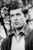

Also known as:赤ひげ (original title)
Country:Japan, 185 minutes
Spoken languages:Japanese
Genres:Drama
Director(s):Akira Kurosawa
Writer(s):Akira Kurosawa, Hideo Oguni, Ryūzō Kikushima, Masato Ide, Shūgorō Yamamoto
Video Codec:Unknown
Number: 2656


Certification:
Storyline:
Aspiring to an easy job as personal physician to a wealthy family, Noboru Yasumoto is disappointed when his first post after medical school takes him to a small country clinic under the gruff doctor Red Beard. Yasumoto rebels in numerous ways, but Red Beard proves a wise and patient teacher. He gradually introduces his student to the unglamorous side of the profession, ultimately assigning him to care for a prostitute rescued from a local brothel.
Cast: 

Medium: Original DVD,
Comments: Part of: The Film(s) of Akira Kurosawa
Loaned: No
Aspect ratio: Unknown